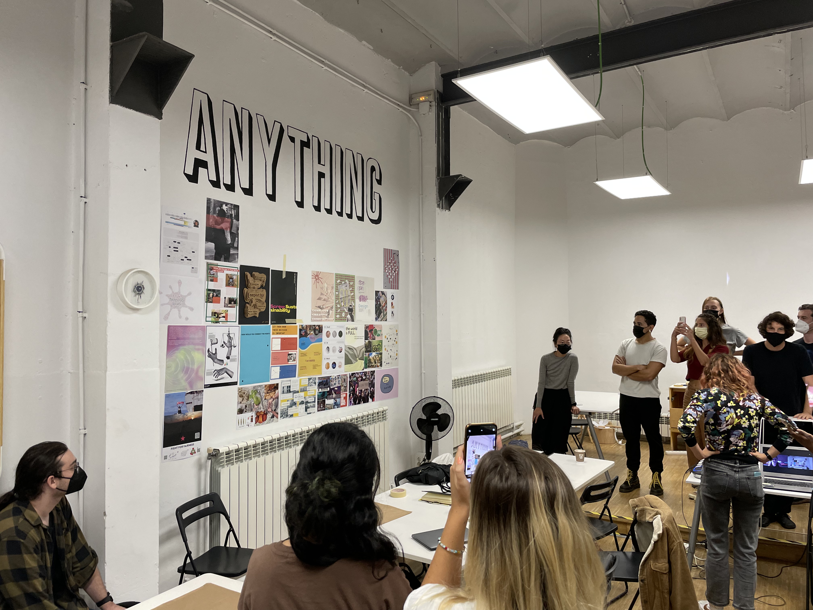

Starting with the why
What personally motivates you in the projects you want to initiate? That was the guiding question for a poster that every students was tasked to design and print for the very first Design Studio class. Below is my visual answer.


Students presenting their posters.